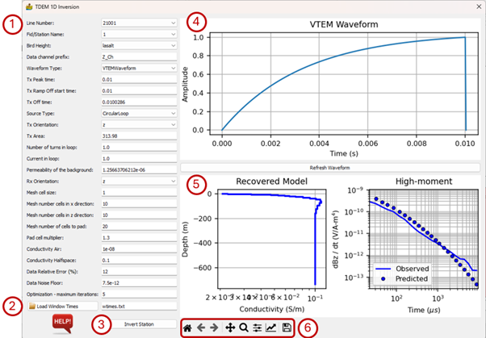
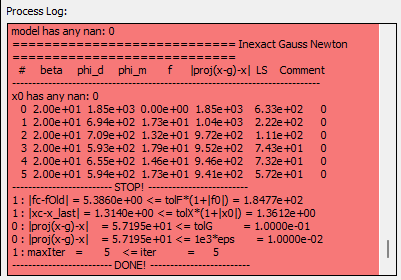

Electromagnetics: Description of Modules¶
EM processing makes use of the SimPEG library (Cockett et al., 2015; Heagy et al., 2017).
TDEM 1D Inversion¶
TDEM (time domain electromagnetic) inversion makes use of the SimPEG library (see references below). The inversion is 1D, so it requires as input a single measurement. Since the inversion is 1D, it inverts data at a single station/sampling point. Line data can be imported using the Import XYZ Data module in the Vector menu.
The SkyTEM Bookpurnong TDEM data used in this example are downloaded from the SimPEG website (https://docs.simpeg.xyz). It consists of an airborne TDEM data in a tab-delimited TXT file with an accompanying TXT file with the window times. A header file (HDR) contains the survey information including the projection information that is required during data import.
The EM interface has the following sections and options:
Data selection, sensor specifications and model settings:
Line Number – The line number along which the station/sampling point is located.
Fid/Station Name – The unique identifier of the sampling point or station name that will be modelled.
Bird Height – The height of the sensor above the terrain.
Data channel prefix – The prefix in the ASCII data file, indicating a data channel.
Waveform Type – An option to select the waveform from a list of standard types. This can be VTEM Waveform, RampOffWaveform, TrapezoidWaveform, QuarterSineRampOnWaveform, TriangularWaveform and HalfSineWaveform.
Tx Peak time – The time when the input waveform is at its maximum.
Tx Ramp Off start time – The time at which the input waveform turns off.
Tx Off Time – The time when the waveform is completely off.
Source Type – Can be CircularLoop or MagDipole.
Tx Orientation – The transmitter orientation, can be x, y or z.
Tx Area – The transmitter area (only for a circular loop source).
Number of turns in loop – Only available for a circular loop source.
Current in loop – Only available for a circular loop source.
Permeability of the background
Rx Orientation – Receiver orientation, can be x, y or z.
Mesh properties – The dimensional properties of the mesh that will be used to discretise the solutions:
Mesh cell size
Mesh number cells in x direction
Mesh number cells in z direction
Mesh number of cells to pad
Pad cell multiplier
Conductivity Air – In S/m.
Conductivity Halfspace – In S/m.
Data Relative Error (%)
Data Noise Floor – In V/Am4 .
Optimization: Maximum number of iterations.
Load window times: Select the text file with the window times.
Invert Station: Click on this to start the inversion process. The Process Log window in the main PyGMI interface displays the progress and some inversion parameters.
The waveform used by the TDEM system.
The inversion results showing the model and the fit of the modelled data to the observed data.
Standard image display settings that allow the user to zoom into specific areas of the image, move the zoomed in area around, return to the full image, save the image, etc.

